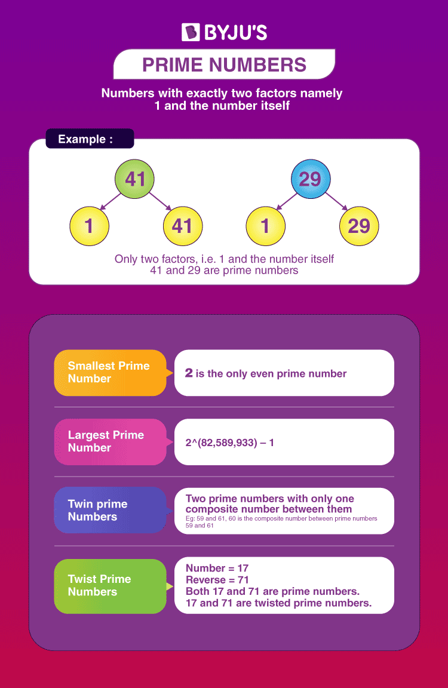
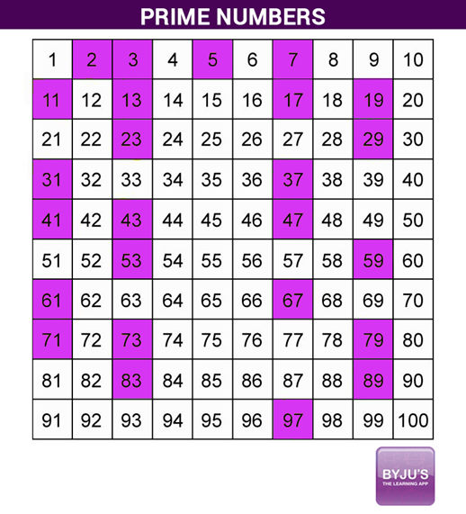

What are Prime Numbers?
A prime number is a positive integer having exactly two factors, i.e. 1 and the number itself. If p is a prime, then its only factors are necessarily 1 and p itself.
Any number that does not follow this is termed a composite number, which can be factored into other positive integers. Another way of defining it is a positive
number or integer, which is not a product of any other two positive integers other than 1 and the number itself.

First Ten Prime Numbers
The first ten primes are 2, 3, 5, 7, 11, 13, 17, 19, 23, 29.
Note:It should be noted that 1 is a non-prime number. It is a unique number.
History of Prime Numbers
The prime number was discovered by Eratosthenes (275-194 B.C., Greece). He took the example of a sieve to filter out the prime numbers from a list of
natural numbers and drain out the composite numbers.
Students can practise this method by writing the positive integers from 1 to 100, circling the prime numbers, and putting a cross mark on composites.
This kind of activity refers to the
Sieve of Eratosthenes.
Properties of Prime Numbers
Some of the properties of prime numbers are listed below:
- Every number greater than 1 can be divided by at least one prime number.
- Every even positive integer greater than 2 can be expressed as the sum of two primes.
- Except 2, all other prime numbers are odd. In other words, we can say that 2 is the only even prime number.
- Two prime numbers are always coprime to each other.
- Each composite number can be factored into prime factors and individually all of these are unique in nature.
Prime Numbers Chart
Before calculators and computers, numerical tables were used for recording all of the primes or prime factorizations up to a specified limit
and are usually printed. The most beloved method for producing a list of prime numbers is called the sieve of Eratosthenes. This method results
in a chart called Eratosthenes chart, as given below. The chart below shows the prime numbers up to 100, represented in coloured boxes.
